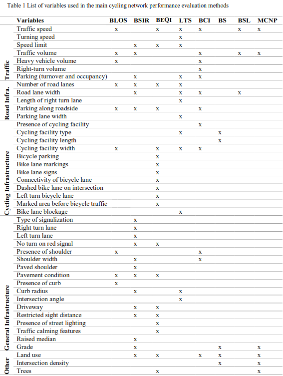
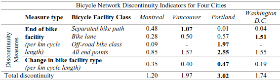
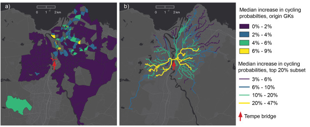
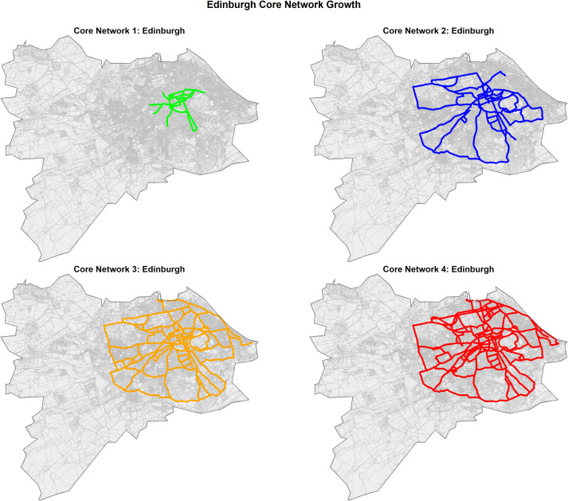
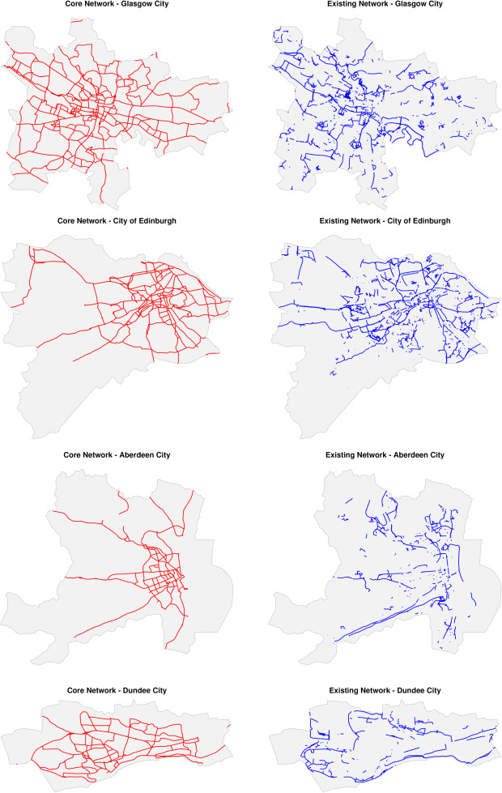
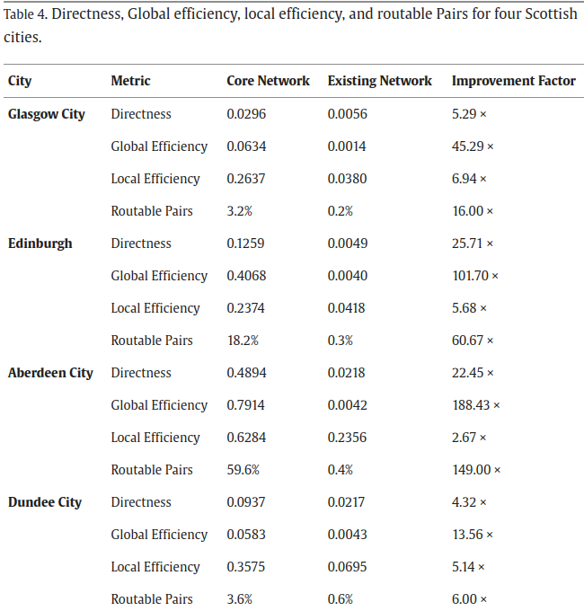
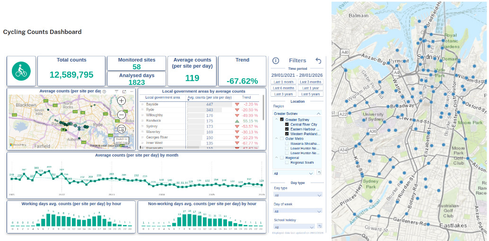

Cycling networks’ performance indicators
notes
Despite growing investments in cycling infrastructure, many networks remain fragmented, limiting their effectiveness. Current planning approaches lack systematic methods to identify and prioritize missing links based on empirical evidence. This research addresses this gap by integrating geospatial analysis, network science, and accessibility modeling to develop a replicable methodology for evaluating and improving cycling networks. While studies have assessed cycling network performance, few have quantified its impact on ridership or provided structured prioritization methods. This research aims to develop a systematic methodology to identify and prioritize missing links in urban cycling networks, quantify the impact of network characteristics on cycling adoption. The cities of Lisbon and Sydney serve as case study due to their fragmented network, high-quality cycling data, and policy commitments to expand infrastructure and make it more consistent. Findings…
1 Background
Sustainable and low-carbon cities are key for addressing climate change, air pollution, and urban congestion.
Previous research found safe, high-quality and efficient cycling networks play a crucial role in uptake cycling levels (P. Cambra and Moura 2020; Christ et al. 2023; Félix, Cambra, and Moura 2020; Félix, Lovelace, and Moura 2022; Félix, Moura, and Clifton 2019; Schoner and Levinson 2014). In recent decades, several urban centers invested in cycling infrastructure (Félix, Cambra, and Moura 2020). During COVID-19, cities introduced pop-up bike lanes, but their planning was often not evidence-based. Consequently, the outcome is a highly fragmented cycling network due to a lack of cohesive strategies or ad-hoc, stretch-specific planning approaches (Moura, Magalhães, and Santos 2017), lacking efficiency.
These approaches often overlook the broader network, resulting in missing links that hinder seamless and safe cycling connectivity. These missing links act as huge barriers for potential cyclists (Félix, Moura, and Clifton 2019), while minor infrastructure additions, when solved, could significantly strengthen networks (Fernandes et al. 2020), providing great potential for cycling leverage (Félix, Moura, and Clifton 2025), and allowing cyclists to safely bicycle between more origins and destinations. Many authorities lack experience in cycling network planning (Lovelace et al. 2017), reinforcing the need for decision-making support tools regarding investments in cycling infrastructure, that account for practical implementation barriers such as urban planning constraints and funding limitations.
European cities are committed to meeting sustainable transport targets, and increasing active travel. The Portuguese National Cycling Strategy targets a 10% shift from car to bicycle trips by 2030, with others aiming to double or triple existing cycling levels for Carbon Neutrality by 2050. The Lisbon Metropolitan Area (LMA) Sustainable Urban Mobility Plan (SUMP) sets a strategy aiming to “reduce the missing links in the mobility and transport system, within the overall vision of metropolitan cohesion”, based on the assumption that “bridging these identified discontinuities will make it possible to have continuous networks that will solve the system’s accessibility and attractiveness problems” (TML, 2024).
How, then, to identify the investment priorities to meet these targets? Planning the infrastructure needed to change mobility patterns requires high-quality evidence and adequate methods.
Recent research on cycling network performance and accessibility focuses on developing comprehensive indicators and methodologies. Studies assessed bike accessibility to activities and opportunities under different network quality criteria, and developed indicators to track cycling infrastructure improvements over time (Humberto, Félix, and Moura 2023; Schoner and Levinson 2014; Schön, Heinen, and Manum 2024; Van Der Meer, Werner, and Loidl 2024; Weikl and Mayer 2023; Macedo, Rodrigues, and Tavares 2017), and ensure equitable network performance across different areas (Humberto, Félix, and Moura 2023; Pereira et al. 2021).
Additionally, data-driven quality assessment methodologies have been proposed, incorporating multiple criteria such as coherence, fragmentation, directness, centrality, circuity, comfort, and attractiveness (P. J. Cambra, Gonçalves, and Moura 2019; Costa, Marques, and Moura 2021; Giacomin and Levinson 2015; Schön, Heinen, and Manum 2024; Van Der Meer, Werner, and Loidl 2024; Weikl and Mayer 2023; Werner et al. 2024; Matos et al. 2021), yet the definition of “consistent” / “cohesive” networks remains poorly defined. Network connectivity over spatial metrics is particularly relevant, yet more empirical evidence is needed to validate their effects on cycling behavior (Schoner and Levinson 2014; Schön, Heinen, and Manum 2024). Nevertheless, few studies assessed its real impacts on cycling levels, which remains a gap in current research.
Recent advances in machine learning expand possibilities for network analysis. Graph Neural Networks can model transport systems where links and nodes interact dynamically. In particular, Temporal Graph Attention Networks (TGATs) combine spatial graph attention with temporal learning components (Jia et al. 2024) to capture how network characteristics and spatio-temporal patterns evolve. TGATs integrate information from neighbouring links (spatial context) while accounting for changes across years or policy shifts (temporal context), making them well suited to analyze historical cycling levels and infrastructure data. Although applied in build environment, communications, and energy consumption studies (Jia et al. 2023, 2024; Rahman, Srikumar, and Smith 2018), these models remain largely unexplored in active mobility research.
Models and tools exist for cycling network prioritization (Félix, Lovelace, and Moura 2022; Lovelace et al. 2017; Lovelace et al. 2024), but ignore network performance, despite using widely available data in a city and open-source algorithms for reproducibility. While computational limitations are less of an issue, transport modeling, GIS, and graph science can be applied to systematically identify missing links on given cycling networks with the potential to improve network performance, accessibility, and cycling uptake. These approaches aim to provide planners with decision-making support tools to evaluate existing networks, identify gaps and areas for improvement, and prioritize infrastructure interventions.
Additional, having a cycling network hierarchy helps to better define priorities for the missing connections, and makes more relevant that all the levels are complemented, being the primary one the most “cohesive”.
This research addresses the following questions: [focus on one]
Which cycling network performance indicators most impact cycling levels, and are they equally relevant across urban contexts?
How can “consistent” cycling networks be defined?
How can a consistent network affect overall cycling adoption and ridership?
The motivation for this research stems from the need to systematically address these gaps, offering cities a replicable methodology and digital tool to identify and prioritize key network improvements. The challenge lies in integrating emerging graph-based programming techniques to model, simulate, and prioritize impactfull cycling connections. Bridging these gaps, cities enable safer, more accessible networks that attract potential cyclists.
This research has the following objectives:
Identify key cycling network performance indicators and define consistent networks, advancing the state-of-the-art
Develop a modeling framework to evaluate network consistency, simulate new connections, and assess impacts on accessibility and cycling adoption
Create a decision support tool to prioritize interventions that strengthen network consistency and leverage cycling, ensuring replicability across different cities.
2 Literature review
We started with Schoner and Levinson (2014): connectivity and directness (network structure measures) as predictors for bicycle commuting levels.
Coherent: “forming continuous networks linking origins and destinations.” (Wang et al. 2026).
The work from Niaki et al. (2025) was promising, once they assess “Cycling Discontinuities” as indicators for performance evaluation. They apply the method to 4 cities: Montreal, Vancouver, Portland, and Washington D.C. Very recent article, presented in WCTR 2023.
“Reviewing existing evaluation methods, it further appears that connectivity or discontinuity indicators have not been systematically identified and are missing from many evaluation methods.”
“proposes a set of indicators to measure cycling network connectivity and the methodology to calculate them, including automated methods for geospatial data with the code available under an open-source licence” (Uses SpatialLite, 8yrs old)
They compile a nice review of the variables used in the main cycling network performance evaluation methods:

But, in the end, the consideration of discontinues has a different meaning from what we are looking for. They consider them as a change of cycling infrastructure type and network endpoints. The results:

From Schön, Heinen, and Manum (2024), they provide a literature review on cycling network connectivity and its effects on cycling. They categorize papers using network graph theories (betweenness, centrality, etc); circuity; accessibility; angular segment analysis; LOS/LTS; network growth algorithms and network design problems (NGA/NDP), optimising cycling network coverage under cost constraints.
there is a trend towards more comprehensive and complex measures focusing on link prioritisation, cost-efficient gap closures, travel demand or several connectivity aspects simultaneously. Such measures allow more comprehensive studies of networks, but we emphasise the importance of open-source data, codes and software to make these recent and future measures and methodologies accessible to practitioners and researchers.
“no review has been dedicated to the measures, methods and models applied to assess network connectivity or the impact of increased network connectivity on cycling behaviour”
“The findings suggest an increase in the number of publications on network connectivity up to 2019, followed by a plateau in the number of studies but with more complex methods.”
“empirical verifications regarding the effects of network connectivity on travel behaviour remain a research gap, even in high-cycling countries, with evidence further limited by limited link-level travel data”
Network-based measures apply network analysis (Cooper 2015) which considers the entire network available to cyclists, evaluating its ability to connect specific origins and destinations or to connect links/nodes to all other links/nodes in a network.
Network analysis can grasp the effects of missing links or links with poor cycling infrastructure, which is particularly important for inexperienced and young cyclists, as they tend to value the presence of continuous cycling infrastructure more than experienced cyclists (Bernhoft and Carstensen 2008; Heinen, Wee, and Maat 2010). Assessing the connectivity of an entire network can be complex and computationally demanding, and requires detailed and topologically correct network models (Boeing 2017).
Vale and Pereira (2016) review of operational measures of walking and cycling accessibility concluded that cycling accessibility had received little attention and was a major field for future research.
The Cycling Routing Algorithm for Network Connectivity (CRANC) tool (Gehrke et al. 2020) evaluates the benefits of new bicycle facilities for the accessibility of various populations and neighbourhoods. It integrates cyclist type/profile and LTS in route choice. This tool is not open, and we cannot use it.
Reggiani et al. (2022) explores the detour acceptance and “discomfort”. Bikeability curve with pareto frontier routes.
The relative distance, also referred to as circuity in the remainder of the article, is the route distance (sum of all path links) divided by the Euclidean distance. This measure, used also in Schoner and Levinson (2014), allows identifying if there are OD pairs connected by meandering routes, which may suggest the need for new road infrastructure. The purpose of this measure is to “identify recreationally oriented routes that meander or circle back on themselves, versus routes that provide an efficient utilitarian connection for commuting” as pointed out in Schoner and Levinson (2014).
The relative discomfort is defined as the total discomfort of the route (sum of discomfort on all links of the route) divided by the Euclidean distance (in meters) of the shortest route. The resulting relative discomfort represents the discomfort per meter.
It is related with the number of different facility types travelled, and the distance traveled in a mix traffic environment.There are many ways to combine the Pareto fronts of all different OD-pairs into one single so-called network-wide bikeability curve. An approach that transforms the set of Pareto fronts into one single network-wide bikeability curve. This curve contains for all possible distance-discomfort trade-off choices, the expected distance, and discomfort of the optimal route for an OD-pair that is sampled from an OD-demand distribution.
(explore more the methods of this paper!)
Furth, Mekuria, and Nixon (2016) define “lack of connectivity” measured by the fraction of OD pairs which are connected with the use of high LTS, excessive detours, weighted by travel demand.
When streets with high traffic stress - on which the mainstream population is unwilling to ride a bike - are removed, the remaining network of streets and paths can be fragmented and poorly connected.
Schön, Heinen, and Manum (2026) assesses the impact of a new cycling infrastructure segment (a bridge in Norway) in terms of betweenness and route link density improvements, and estimate the increase in cycling probabilities.

A very recent paper from Wang et al. (2026) provides a framework for generating and prioritizing “core” cycling network designs.
It tackles fragmented and disjointed networks. They balance cohesion coverage and directness metrics, aimed to produce “effective” networks for the cycling potential, meeting the travel patterns. The result are “cohesive” networks suggested, using an open-source tool developed by the authors. The process takes about 15min to run and generate results (!).
While the method uses graph theory concepts for network analysis, it is fundamentally driven by travel demand data and policy objectives rather than network structure alone. It does not consider current cycling volumes, but cycling potential estimates.
It considers the following criteria based on data availability and computational feasibility: directness (through arterial weighting and shortest-path algorithms), connectivity and coherence (via network growth strategies and systematic removal of disconnected segments), coverage and accessibility (through spatial analysis and buffer zone evaluation), and demand alignment (by integrating cycling potential data to focus on high-usage corridors).
Hierarchical road prioritization and arterial weighing:
- Routes with higher cycling potential are prioritised.
- When cycling potential is comparable, “A Road” segments are chosen over “B Road” segments, which in turn are chosen over “Minor Road” segments.
- When cycling potential values are identical, the network favours routes associated with higher-ranked road types.
- If both cycling potential values and road classifications are equivalent, the shortest route is selected.
It allows control over the n-degree dangle removals (dead ends - degree-one nodes); the threshold for high demand segments (higher -> less dense; lower -> network expansion).

Key performance metrics assess Network Cohesion and Connectivity, Demand Alignment, Origin-Destination Accessibility, Directness and Efficiency. (read more about the ones of interest)


It is well suited for places without cycling network, or to compare the results with places with already implemented networks. They also discuss the problems with raw OSM data (topological, miss-classification, cycling and pedestrian as separated lines from the road network).
2.1 Network structures and topology
A lot of work has been developed using synthetic networks and synthetic population / demand.
For the generality of road network structures, the work from Xie and Levinson (2007) analyze topology and geometric variations on 16 types of (synthetic) networks.
Existing measures of heterogeneity, connectivity, accessibility, and interconnectivity are reviewed and three supplemental measures are proposed, including measures of entropy, connection patterns, and continuity
differentiated structures of road networks can be evaluated by the measure of entropy; predefined connection patterns of arterial roads can be identified and quantified by the measures of ringness, webness, beltness, circuitness, and treeness. A measure of continuity evaluates the quality of a network from the perspective of travelers.
It is focused on the travel perspective.
From Xing et al. (2025), a definition of Road Network Connectivity is established, which is binary (connected or unconnected), and does not provide performance levels.
Graph theory was the earliest method used in the study of road network connectivity evaluation [22] and it is a feasible and effective method to study road network connectivity as a complex topological network [23]. Most of the definitions of road network connectivity in graph theory are defined in terms of the topological connectivity relationship between nodes, and if two neighboring nodes are linked by an edge, they are said to be connected [24]. In this context, the road network connectivity is defined from the graph theory level, where the road network is treated as a topological network, and the road network connectivity is evaluated based on the topological relationships between nodes and edges.
However, it is difficult to fully express road network connectivity in an increasingly complex urban road network only by defining road network connectivity in a limited space from the perspective of road network topology. This definition of road network connectivity only through a simple topology can only distinguish between connectivity and non-connectivity, and cannot describe different degrees of connectivity performance.
The traditional connectivity index was proposed in the 20th century, when the road traffic structure and the urban road network were simpler than today.
The original connectivity evaluation is based on the knowledge of graph theory, constructing the traditional connectivity evaluation index, and evaluating the road network connectivity from the quantitative relationship between nodes and edges, Garrison and Marble (1964) proposed four road network connectivity evaluation indexes from the perspective of the number of connected edges in the road network, as well as node accessibility indexes from the perspective of node access to evaluate the connectivity degree of the road network. Due to the early stage of the definition of connectivity, only the topological relationship of the road network is considered to construct the relevant indexes for evaluation, and the nature of road traffic is not considered in the evaluation of the road network. Therefore, Kansky and Danscoine [11] constructed four connectivity indicators η, π, θ and r to evaluate the connectivity of road network by considering the actual elements of road network, such as the length of road sections. Traditional connectivity indicators alone do not consider all the factors and cannot completely describe the road network structure. Noda [27] established a GTP evaluation model that considers the relationship between the number of edges and nodes, while incorporating the closed-loop circuit in the road network to evaluate road network connectivity. In addition to constructing the model evaluation, there are scholars who use joint multiple indicators to evaluate the road network connectivity, avoiding the limitation of single indicator evaluation. Sreelekha et al. [9] and others chose four traditional connectivity evaluation indicators, as well as the GTP connectivity model to comprehensively evaluate the connectivity of the road network. Sharma and Ram [28] and Daniel et al. [29] evaluated the road network connectivity through the combination of connectivity indicators and the center index Shimbel’s combination to evaluate road network connectivity by considering the importance of centrality nodes.
Summary of existing studies on road network connectivity evaluation:
| Method | Describe | Limitations | Example of applications |
|---|---|---|---|
| Alpha index | 𝛂 = (e − v + 1)/(2v − 5) | Inability to reflect changes in connectivity due to road control on road sections | Garrison and Marble [10] |
| Beta index | 𝛽 = e/v | Inability to reflect changes in connectivity due to road control conditions and layout structure of road sections | Garrison and Marble [10] |
| Gamma index | 𝛾 = e/(3v − 2) | Inability to reflect changes in connectivity due to road control conditions and layout structure of road sections | Garrison and Marble [10] |
| Eta index | 𝜂 = R/e | Lack of consideration of the impact of nodes in the road network on connectivity | Kansky and Danscoine [11] |
| Pi index | 𝝅 = R/d | Only the influence of the distance of the road section was considered. | Kansky and Danscoine [11] |
| Theta index | 𝜃 = T/v | Applicable to topological networks with high node traffic or where transport hubs are important nodes | Kansky and Danscoine [11] |
| GTP | [mathematical equation] | Capable of reflecting the impact of the structural layout of the road network on connectivity, but unable to reflect changes in connectivity due to road control on road sections | Noda [27] Sreelekha et al. [9] |
| LNR model | CIi = 𝜔1e/v + 𝜔2fi | In the evaluation addressing the connectivity of the pedestrian network, transport facilities were only considered in relation to public transport facilities, and the impact of road access facilities was not considered. | Li et al. [14] |
| Shimbel Index | Represented by the shortest distance from a node to other nodes, the shorter the distance the better the centrality. | The main focus is on the shortest path between connected nodes; however, the directness of the path’s connectivity is not considered; the shortest distance of the path is shorter, but its connectivity is also affected by excessive detours. | Sharma and Ram [28] Daniel et al. [29] |
| Four-way intersection count | Number of four-way intersections in the road network | Considering four-way intersection connectivity only in terms of road network topology and ignoring disconnections due to access restrictions in a particular direction caused by control conditions | Soczówka et al. [15] |
| Average distance, route directness, and route diversity | Network connectivity is defined by the distance between nodes and the nature of the routes; a well-connected network will have shorter distances between nodes, more direct routes, and more travelling paths. | The three indicators are evaluated individually, without integrating the three indicators for a comprehensive evaluation of road network connectivity. | Scoppa and Anabtawi [12] |
| Capacity-weighted eigenvector centrality methods | Links with different attributes have different road capacities and exhibit different connectivity capabilities | The capacity of a road section is affected by many factors, and the uncertainty of the parameters may affect the stability and authenticity of the evaluation results. | Ando et al. [13] |
Then they propose a road network connectivity evaluation method based on node turning coefficients to address connectivity challenges under complex traffic control conditions. And run for different neighbourhoods, This is more from a traffic perspective (turning lane turning restrictions).
Szell et al. (2021) examined topological constraints and strategic planning for cycling network optimisation using percolation theory. Their synthetic approach modelled cycling network growth in 62 cities, testing three growth strategies: random addition, greedy demand-based expansion, and betweenness centrality prioritisation. Their findings reveal challenges in creating cohesive networks and demonstrate diminishing returns on cycling infrastructure investment until reaching critical mass, highlighting the need for strategic, persistent investment. Whilst their network expansion models show significant overlaps with well-developed cycling networks in cities, the synthetic approach using theoretical node placement and uniform grid topologies does not directly represent real urban street patterns or empirical demand distributions. (from Wang et al. (2026) lit review). [explore this further]
2.2 Accessibility
Check the work from Murphy and Owen (2019)
2.3 So…
Consistency/cohesion (working definition to test):
continuous connections between origins/destinations
low-stress continuity along likely routes
minimal fragmentation/dangling segments
good directness + redundancy at a network level
Summary from the literature so far:
Connectivity/discontinuity indicators: Niaki et al. (2025) (cycling discontinuities): useful methods + code, but their “discontinuity” focuses on facility-type change/endpoints (not fully my target meaning)
Reviews: Schön, Heinen, and Manum (2024) on connectivity measures + limited empirical validation
Directness/circuity and discomfort: Schoner and Levinson (2014) (circuity), Reggiani et al. (2022) (distance–discomfort Pareto)
Network growth / critical mass: Szell et al. (2021) (percolation - needs further exploring)
“Core/cohesive network” generation: Wang et al. (2026) framework + open tool (but uses cycling potential, not observed volumes)
- How can “consistent” cycling networks be defined and operationalised?
- How does increasing network consistency affect -> Accessibility -> cycling adoption/ridership?
3 Methods
State of the art and selection of network indicators
Literature review on cycling network analysis and performance
Systematization of network indicators with impact on cycling levels
A comprehensive set of network performance indicators will be compiled from the literature and case-studies on cycling network assessment regarding consistency, performance and accessibility. These indicators include (not exclusively) connectivity, directness, closeness, betweenness, redundancy, and fragmentation. The integration of open data sources and graph network science will advance the field of cycling network analysis.
Modelling network factors with impact on cycling adoption
Collecting and processing data to build a model that explains how improvements in network consistency influence performance. This model is calibrated and validated with the existing high-quality cyclists’ counting dataset in the case studies (2017-2023), coincident with the before/after major cycling infrastructure changes in each city.
For data preparation
OSMnx, for creating a valid topological network, with edges and nodes correctly represented. There is a QGIS plugin for that. See Boeing (2017) .
For identification of missing links
- Network performance assessment (baseline)
- Simulate changes in the cycling network (scenarios)
- Assess performance of potential improvements and estimate impacts on cycling
- Identify network segments and prioritize high-impact interventions
- Develop an automated algorithm to systematically identify priority network links
sfnetworksR packagesDNA, from Cooper and Chiaradia (2020), although it is not easy to setup (only windows a couple of years ago), and very useful for 3D networks (as Hong Kong PedNet)
For the impacts estimation
Modelling with panel data? considering the temporal effects (existing network at each year), and location and global effects
Temporal Graph attention networks?
Temporal Graph Attention Networks (TGATs) combine spatial graph attention with temporal learning components to capture how network characteristics and spatio-temporal patterns evolve. TGATs integrate information from neighbouring links (spatial context) while accounting for changes across years or policy shifts (temporal context), making them well suited to analyze historical cycling levels and infrastructure data.
3.1 Case Studies
Lisbon
Sydney (city - Local Government Area)
3.2 Data
OSM networks, namely for cycling network
Historical perspective to access the connectivity gains (?)
- Getting historical OSM cycling infrastructure data (Eugene Vidal)
Counting points and evolution of cyclists
